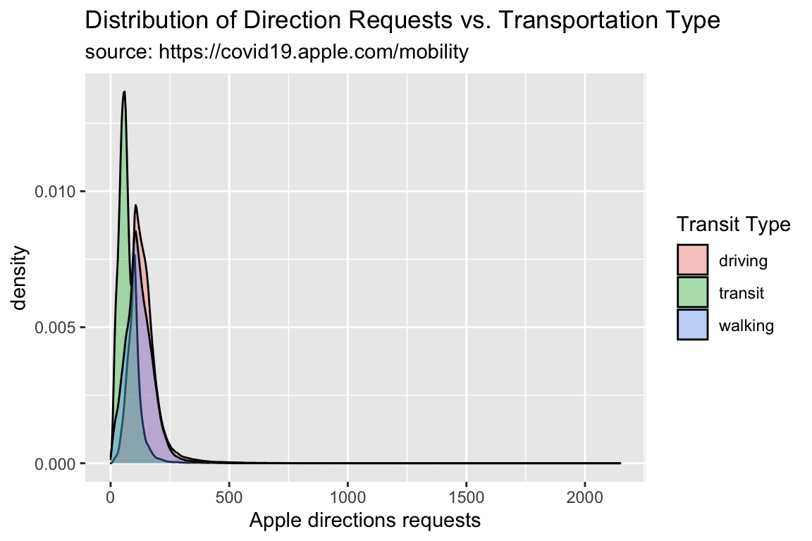
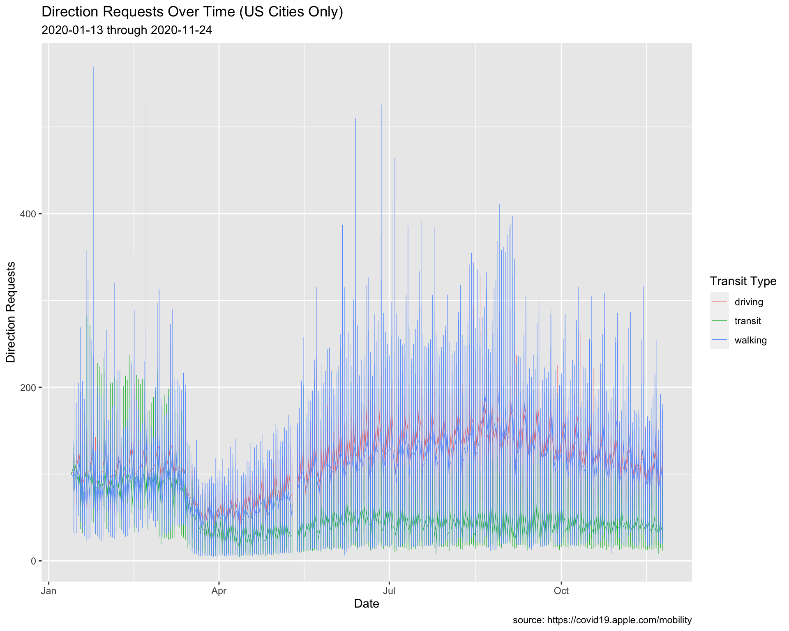
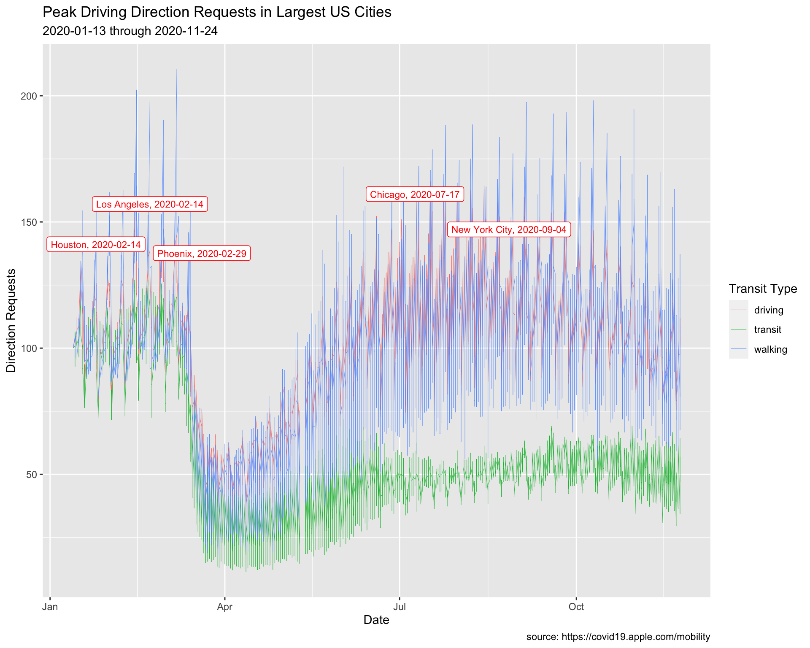
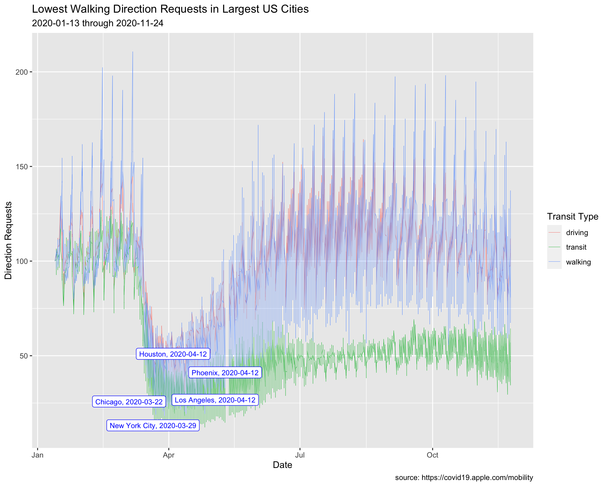
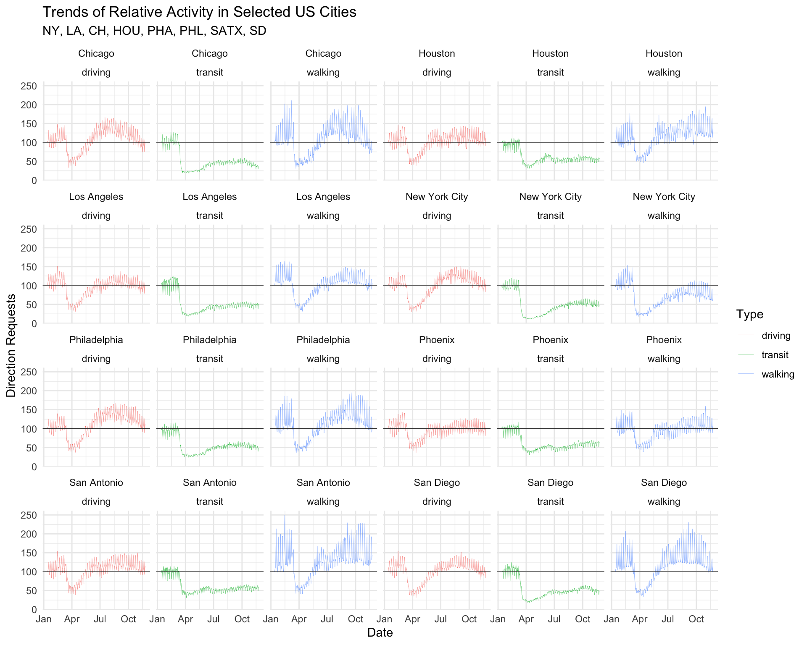
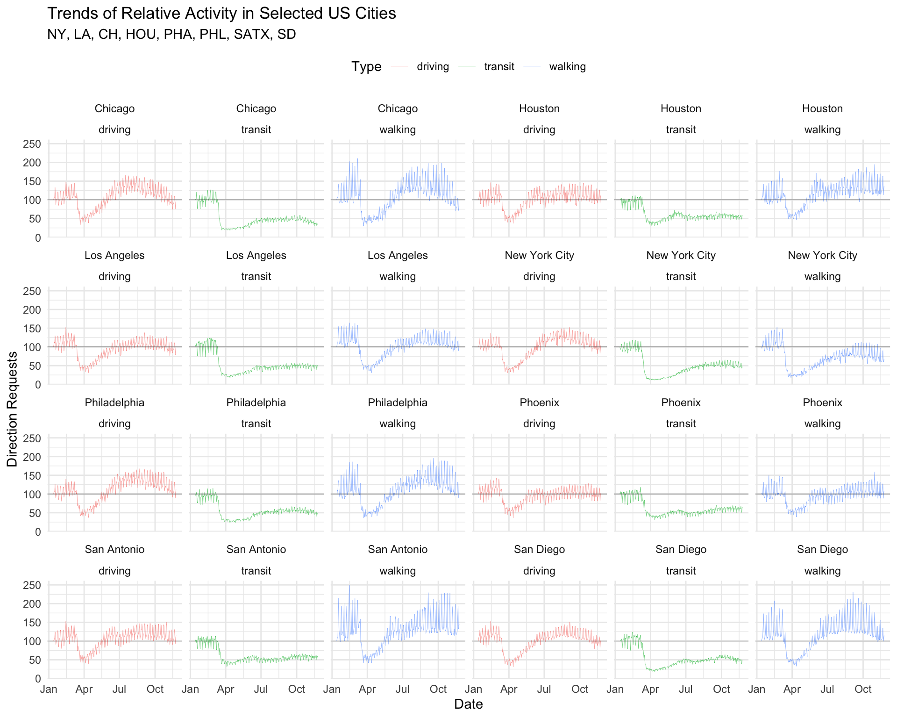
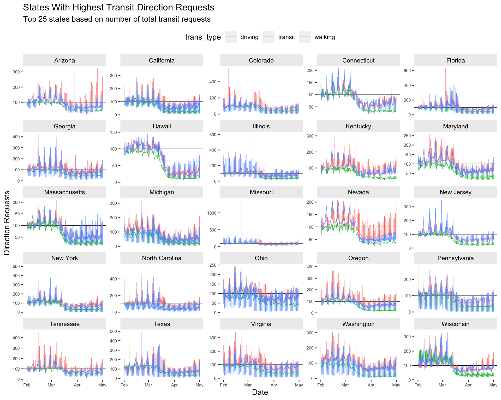

Data Visualization as Communication
1 Objectives
Recognize the needs of your audience
level of data literacy, subject matter expertise, etc.
Check and communicate data quality with stakeholders
let them know the good and the bad news
Identify the correct data visualization (based on the data)
single variable, bivariate, and multivariate graphs
2 Materials
Slides:
RStudio Project:
3 Previous lessons
All of the exercises and lessons are available here, but you can also read more about ggplot2 on the tidyverse website, and in the Data Visualisation chapter of R for Data Science.
4 Load the packages
The main packages we’re going to use are dplyr, tidyr, and ggplot2. These are all part of the tidyverse, so we’ll import this package below:
install.packages("tidyverse")
library(tidyverse)5 Example: COVID and Mobility
How has COVID changed our modes of transportation?
- are people using fewer or different forms of transportation?
What kind of measurements would this be?
- how people travel (walk, drive, etc.)
What would these data look like?
- what would the columns and rows look like?
5.1 Data Import
Apple mobility data:
https://covid19.apple.com/mobility
Import these data below:
AppleMobRaw <- readr::read_csv("https://bit.ly/apple-mob-raw")5.1.1 Tidy AppleMobRaw
These data need to be restructured into a tidy format.
AppleMobRaw %>%
tidyr::pivot_longer(cols = -c(geo_type:country),
names_to = "date", values_to = "dir_request")5.1.2 Wrangle AppleMobRaw
We will remove the missing values from country and sub-region
AppleMobRaw %>%
tidyr::pivot_longer(cols = -c(geo_type:country),
names_to = "date", values_to = "dir_request") %>%
# remove missing country and missing sub-region data
dplyr::filter(!is.na(country) & !is.na(`sub-region`))Use mutate() to create a properly formatted date variable, and rename() the transportation_type variable to trans_type. Apply janitor::clean_names() to the entire dataset and assign the final output to TidyApple.
AppleMobRaw %>%
tidyr::pivot_longer(cols = -c(geo_type:country),
names_to = "date", values_to = "dir_request") %>%
# remove missing country and missing sub-region data
dplyr::filter(!is.na(country) & !is.na(`sub-region`)) %>%
# format date
mutate(date = lubridate::ymd(date)) %>%
# change name of transportation types
rename(trans_type = transportation_type) %>%
# clean names
janitor::clean_names() -> TidyApple5.1.3 Bonus (counting!)
One of the most important jobs of analytic work is counting things :) below is an example of using the map() function from the purrr package to pass the count() function from dplyr to the character variables in TidyApple. We can example the counts of each value by using the $ to subset the tidy_apple_counts list.
TidyApple %>%
select_if(is.character) %>%
map(~count(data.frame(x = .x), x, sort = TRUE)) -> tidy_apple_counts
tidy_apple_counts$country6 Visualizing Distributions
Before we start looking at relationships between variables, we might want to examine the underlying distribution of a single variable. We’re going to cover two graphs that display variable distributions: histograms and density plots.
6.1 Histograms
The x axis for the histogram will have the direction requests, and the y variable will display a count of the values.
lab_hist <- labs(x = "Apple directions requests",
y = "Count",
title = "Distribution of Direction Requests",
subtitle = "source: https://covid19.apple.com/mobility")A histogram is a special kind of bar graph–it only takes a single continuous variable (in this case, dir_request), and it displays a relative breakdown of the values.
6.1.1 exercise
Create a histogram of direction requests using dir_request
TidyApple %>% ggplot() +
geom_histogram(aes(x = ____________)) +
lab_hist6.1.2 solution
See blow:
TidyApple %>% ggplot() +
geom_histogram(aes(x = dir_request)) +
lab_hist
6.2 Adjusting Y Axes
We can see the y axis is in scientific notation. This might be hard for some audiences to interpret, so we will change this to use the whole number with commas with the scales package.
6.2.1 exercise
Add the scales::comma value to the scale_y_continuous() function.
library(scales)
TidyApple %>% ggplot() +
geom_histogram(aes(x = dir_request)) +
scale_y_continuous(labels = __________) +
lab_hist6.2.2 solution
See below:
library(scales)
TidyApple %>% ggplot() +
geom_histogram(aes(x = dir_request)) +
scale_y_continuous(labels = scales::comma) +
lab_hist
6.3 Histogram Shape
We can control the shape of the with the bins argument. The default is 30.
6.3.1 exercie
Set bins to 15.
TidyApple %>% ggplot() +
geom_histogram(aes(x = dir_request), bins = __) +
scale_y_continuous(labels = scales::comma) +
lab_hist6.3.2 solution
See below:
TidyApple %>% ggplot() +
geom_histogram(aes(x = dir_request), bins = 15) +
scale_y_continuous(labels = scales::comma) +
lab_hist
6.3.3 exercise
Set bins to 45 and assign it to gg_hist45.
TidyApple %>% ggplot() +
geom_histogram(aes(x = dir_request), bins = __) +
scale_y_continuous(labels = scales::comma) +
lab_hist -> _____________6.3.4 solution
See below:
TidyApple %>% ggplot() +
geom_histogram(aes(x = dir_request), bins = 45) +
scale_y_continuous(labels = scales::comma) +
lab_hist -> gg_hist45
6.4 Density Plots
What if we want to see how a continuous variable is distributed across a categorical variable? Density plots come in handy here (so do geom_boxplot()s!), even though the y axis can be hard to interpret. Read more about the density geom here.
We are going to create some labels so we know what to expect when we create our graph. We want to see the distribution of the directions request, filled by the levels of transportation type.
lab_density <- labs(x = "Apple directions requests",
fill = "Transit Type",
title = "Distribution of Direction Requests vs. Transportation Type",
subtitle = "source: https://covid19.apple.com/mobility")Now we build the density plot, passing the variables so they match our labels above.
6.4.1 exercise
Create a density plot of direction requests colored by the type of transportation.
TidyApple %>%
ggplot() +
geom_density(aes(x = __________, fill = __________)) +
lab_density6.4.2 solution
See below:
TidyApple %>%
ggplot() +
geom_density(aes(x = dir_request, fill = trans_type)) +
lab_density
6.4.3 exercise
Adjust the overlapping densities by setting alpha to 1/3. Assign this plot to gg_density.
TidyApple %>%
ggplot() +
geom_density(aes(x = dir_request, fill = trans_type),
alpha = __________) +
lab_density -> __________6.4.4 solution
See below:
TidyApple %>%
ggplot() +
geom_density(aes(x = dir_request, fill = trans_type),
alpha = 1/3) +
lab_density -> gg_density
gg_density
7 Visualizing Trends
Now we’ve seen the distribution of dir_request, and how it varies across trans_type. Next we’ll look at how the relaitionship between these two variabels varies over date.
7.1 Focus on US Cities
Let’s narrow the data down a bit. We’ll start by filtering to only US cities.
7.1.1 exercise
Filter the geo_type to "city" and the country to "United States", and pass the date variable to skimr::skim()
TidyApple %>%
filter(geo_type == ___________ &
country == ___________) %>%
# use skimr to check date
skimr::skim(___________)7.1.2 solution
Here we reduce the dataset to only cities in the US, and we check the date range with skimr::skim()
TidyApple %>%
filter(geo_type == "city" &
country == "United States") %>%
# use skimr to check date
skimr::skim(date)| Name | Piped data |
| Number of rows | 99538 |
| Number of columns | 7 |
| _______________________ | |
| Column type frequency: | |
| Date | 1 |
| ________________________ | |
| Group variables | None |
Variable type: Date
| skim_variable | n_missing | complete_rate | min | max | median | n_unique |
|---|---|---|---|---|---|---|
| date | 0 | 1 | 2020-01-13 | 2020-11-24 | 2020-06-19 | 317 |
7.2 Updating Labels
We can see this date range is from 2020-01-13 to 2020-11-24.
We want to specify this in our labels object (lab_line01), so we will use the paste0() function to have the labels update every time the data changes.
lab_line01 <- labs(x = "Date",
y = "Direction Requests",
title = "Direction Requests Over Time (US Cities Only)",
subtitle = paste0(min(TidyApple$date), " through ", max(TidyApple$date)),
caption = "source: https://covid19.apple.com/mobility",
color = "Transit Type")7.3 Line Graphs
We’re going to create a line graph of direction requests over time, colored by color.
7.3.1 exercise
Pass the filtered data to the geom_line(), mapping the following variables to their relative aesthetics:
datetox
dir_requesttoy
trans_typeto bothgroupandcolor
Include lab_line01 to see how the new labels look.
TidyApple %>%
filter(geo_type == "city" &
country == "United States") %>%
ggplot() +
geom_line(aes(x = __________, y = __________,
group = __________, color = __________)) +
__________7.3.2 solution
Let’s see what happens when we use lab_line01.
TidyApple %>%
filter(geo_type == "city" &
country == "United States") %>%
ggplot() +
geom_line(aes(x = date, y = dir_request,
group = trans_type, color = trans_type)) +
lab_line01
The lines in this graph are overlapping each other, so we will adjust the size to 0.20.
7.3.3 exercise
Change the size of the geom_line() (outside of aes()).
TidyApple %>%
filter(geo_type == "city" &
country == "United States") %>%
ggplot() +
geom_line(aes(x = date, y = dir_request,
group = trans_type, color = trans_type),
size = ____________) +
lab_line017.3.4 solution
Now the trends are easier to see.
TidyApple %>%
filter(geo_type == "city" &
country == "United States") %>%
ggplot() +
geom_line(aes(x = date, y = dir_request,
group = trans_type, color = trans_type),
size = 0.20) +
lab_line01
7.4 Narrow Date Range
We are going to only look at the trends between February and August of 2020. We will create two new objects (start_date and end_date), which we can use to embed the dates into the filter() function (and anywhere else we need to use this date range). This method is probably better than passing the dates as a character (i.e. in quotes), because we would only have to change it in one place. However, the option above makes better use of R functional programming syntax.
7.4.1 exercise
Pass the start_date and end_date to the as_date() functions, and take a look at the date variable with skimr::skim()
# create date objects
start_date <- "2020-02-01"
end_date <- "2020-08-01"
# check with skimr
TidyApple %>%
filter(geo_type == "city" &
country == "United States",
date >= as_date(_____________) &
date <= as_date(_____________)) %>%
skimr::skim(_____________)7.4.2 solution
See below:
# create date objects
start_date <- "2020-02-01"
end_date <- "2020-08-01"
# check with skimr
TidyApple %>%
filter(geo_type == "city" &
country == "United States",
date >= as_date(start_date) &
date <= as_date(end_date)) %>%
skimr::skim(date)| Name | Piped data |
| Number of rows | 57462 |
| Number of columns | 7 |
| _______________________ | |
| Column type frequency: | |
| Date | 1 |
| ________________________ | |
| Group variables | None |
Variable type: Date
| skim_variable | n_missing | complete_rate | min | max | median | n_unique |
|---|---|---|---|---|---|---|
| date | 0 | 1 | 2020-02-01 | 2020-08-01 | 2020-05-02 | 183 |
7.4.3 exercise
Create the new labels (lab_line_02) with the paste0() function by passing both start_date and end_date. Assign the plot to gg_us_cities
lab_line_02 <- labs(x = "Date",
y = "Direction Requests",
title = "Direction Requests Over Time (US Cities Only)",
subtitle = paste0(___________, " through ", ___________),
caption = "source: https://covid19.apple.com/mobility",
color = "Transit Type")
TidyApple %>%
filter(geo_type == "city" &
country == "United States",
date >= as_date(start_date) &
date <= as_date(end_date)) %>%
ggplot() +
# make these slightly larger...
geom_line(aes(x = date, y = dir_request,
group = trans_type, color = trans_type), size = 0.30) +
lab_line_02 -> ___________7.4.4 solution
See below:
lab_line_02 <- labs(x = "Date",
y = "Direction Requests",
title = "Direction Requests Over Time (US Cities Only)",
subtitle = paste0(start_date, " through ", end_date),
caption = "source: https://covid19.apple.com/mobility",
color = "Transit Type")
TidyApple %>%
filter(geo_type == "city" &
country == "United States",
date >= as_date(start_date) &
date <= as_date(end_date)) %>%
ggplot() +
geom_line(aes(x = date, y = dir_request,
group = trans_type, color = trans_type),
# make these slightly larger...
size = 0.30) +
lab_line_02 -> gg_us_cities
8 Labelling Data
In the previous lesson, we introduced the ggrepel package to show the points on this graph of top performing pharmaceutical companies.

We’re going to use labels to highlight a few cities in the TidyApple dataset.
8.1 Max Driving Requests
The code below creates a subset of the data (TopUSCities). Use this to add the labels.
TopUSCities <- TidyApple %>%
filter(country == "United States" &
region %in% c("New York City", "Los Angeles",
"Chicago", "Houston", "Phoenix"))
TopUSCities8.1.1 exercise
Create MaxUSCitiesDriving by filtering trans_type, grouping on the region variable, and using dplyr::slice_max() to get the top value in dir_request.
TopUSCities %>%
filter(trans_type == __________) %>%
group_by(__________) %>%
slice_max(__________) -> MaxUSCitiesDriving
MaxUSCitiesDriving8.1.2 solution
See below:
TopUSCities %>%
filter(trans_type == "driving") %>%
group_by(region) %>%
slice_max(dir_request) -> MaxUSCitiesDriving
MaxUSCitiesDriving8.1.3 exercise
Create graph labels:
assign
"Peak Driving Direction Requests in Largest US Cities"totitleassign
"Max Driving Direction Requests & Date"tosubtitle
lab_line_max_drivers <- labs(
x = "Date",
y = "Direction Requests",
title = "_________________________________",
subtitle = "_________________________________",
caption = "source: https://covid19.apple.com/mobility",
color = "Transit Type")8.1.4 solution
See below:
lab_line_max_drivers <- labs(
x = "Date",
y = "Direction Requests",
title = "Peak Driving Direction Requests in Largest US Cities",
subtitle = "Max Driving Direction Requests & Date",
caption = "source: https://covid19.apple.com/mobility",
color = "Transit Type")8.1.5 exercise
Create max_driving_labels using paste0() with region and date.
MaxUSCitiesDriving %>%
mutate(
max_driving_labels = paste0(______, ", ", ______)) -> MaxUSCitiesDriving
MaxUSCitiesDriving8.1.6 solution
See below:
MaxUSCitiesDriving %>%
mutate(max_driving_labels = paste0(region, ", ", date)) -> MaxUSCitiesDriving
MaxUSCitiesDriving8.1.7 exercise
Create a line plot, assigning the following values in geom_label_repel():
- set the
dataargument toMaxUSCitiesDriving
Inside the aes():
- map
labeltomax_driving_labels
Outside the aes()
- map
colorto"red"
- map
sizeto3
TopUSCities %>%
ggplot() +
geom_line(aes(x = date, y = dir_request,
group = trans_type,
color = trans_type),
# make these slightly smaller again...
size = 0.15) +
geom_label_repel(data = _____________,
aes(x = date, y = dir_request,
label = _____________),
# set color and size...
color = _____,
size = _) +
lab_line_max_drivers8.1.8 solution
See below:
TopUSCities %>%
ggplot() +
geom_line(aes(x = date, y = dir_request,
group = trans_type,
color = trans_type),
# make these slightly smaller again...
size = 0.15) +
geom_label_repel(data = MaxUSCitiesDriving,
aes(x = date, y = dir_request,
label = max_driving_labels),
# set color and size...
color = "red",
size = 3) +
lab_line_max_drivers
8.2 Min Walking Requests
We are going to repeat the process above, but use the minimum value for walking direction requests.
8.2.1 exercise
filter()thetrans_typeto"walking"
group_by()theregion
- use
slice_min()to get the minimum value fordir_request - Assign to
MinUSCitiesWalking
TopUSCities %>%
filter(________ == ________) %>%
group_by(________) %>%
slice_min(________) -> ________
MinUSCitiesWalking8.2.2 solution
See below:
TopUSCities %>%
filter(trans_type == "walking") %>%
group_by(region) %>%
slice_min(dir_request) -> MinUSCitiesWalking
MinUSCitiesWalking8.2.3 exercise
- assign
"Lowest Walking Direction Requests in Largest US Cities"totitle
- assign
"Min Walking Direction Requests & Date"tocaption
lab_line_min_walking <- labs(
x = "Date",
y = "Direction Requests",
title = "__________________________________________",
subtitle = "__________________________________________",
caption = "source: https://covid19.apple.com/mobility",
color = "Transit Type")8.2.4 solution
See below:
lab_line_min_walking <- labs(
x = "Date",
y = "Direction Requests",
title = "Lowest Walking Direction Requests in Largest US Cities",
subtitle = "Min Walking Direction Requests & Date",
caption = "source: https://covid19.apple.com/mobility",
color = "Transit Type")8.2.5 exercise
Create min_walking_labels using paste0() with region and date
MinUSCitiesWalking %>%
mutate(min_walking_labels = paste0(_____, ", ", _____)) -> MinUSCitiesWalking
MinUSCitiesWalking8.2.6 solution
See below:
MinUSCitiesWalking %>%
mutate(min_walking_labels = paste0(region, ", ", date)) -> MinUSCitiesWalking
MinUSCitiesWalking8.2.7 exercise
Create a line plot, assigning the following values in geom_label_repel():
- set
datatoMinUSCitiesWalking
Inside aes():
- map
min_walking_labelstolabel
Outside aes():
- map
"blue"tocolor
- map
3tosize
TopUSCities %>%
ggplot() +
geom_line(aes(x = date, y = dir_request,
group = trans_type,
color = trans_type),
# make these slightly smaller again...
size = 0.15) +
geom_label_repel(data = ____________,
aes(x = date, y = dir_request,
label = ____________),
# set color and size...
color = _______,
size = _) +
lab_line_min_walking8.2.8 solution
See below:
TopUSCities %>%
ggplot() +
geom_line(aes(x = date, y = dir_request,
group = trans_type,
color = trans_type),
# make these slightly smaller again...
size = 0.15) +
geom_label_repel(data = MinUSCitiesWalking,
aes(x = date, y = dir_request,
label = min_walking_labels),
# set color and size...
color = "blue",
size = 3) +
lab_line_min_walking
9 Advanced Facets
In the previous lesson, we introduced the facet_wrap() function for viewing the relationship between two variables across the levels of a categorical variable. In the next section, we’re going to show how faceting can be used to explore ‘small multiples’ in a dataset with variation across multiple levels.
9.1 Top Cities
We’re going to focus on the top 8 cites according to their population (the date of this writing is 2020-11-26).
9.1.1 exercise
Top Cities
We’ll store these eight cities in the focus_on vector and use it to filter the TidyApple dataset.
focus_on <- c("New York City", "Los Angeles",
"Chicago", "Houston",
"Phoenix", "Philadelphia",
"San Antonio", "San Diego")
TopCities <- TidyApple %>%
filter(region %in% _____________)
TopCities %>% glimpse(60)9.1.2 solution
See below:
focus_on <- c("New York City", "Los Angeles",
"Chicago", "Houston",
"Phoenix", "Philadelphia",
"San Antonio", "San Diego")
TopCities <- TidyApple %>%
filter(region %in% focus_on)
TopCities %>% glimpse(60)## Rows: 7,608
## Columns: 7
## $ geo_type <chr> "city", "city", "city", "city", "city…
## $ region <chr> "Chicago", "Chicago", "Chicago", "Chi…
## $ trans_type <chr> "driving", "driving", "driving", "dri…
## $ sub_region <chr> "Illinois", "Illinois", "Illinois", "…
## $ country <chr> "United States", "United States", "Un…
## $ date <date> 2020-01-13, 2020-01-14, 2020-01-15, …
## $ dir_request <dbl> 100.00, 103.68, 104.45, 108.72, 132.8…9.2 Graph Labels
We’re going to place date on the x axis, and dir_request on the y. The tite will reflect a general description of what we’re expecting to see, and we’ll list the cities in the subtitle. color will be used to give a better description than trans_type.
9.2.1 exercise
Graph Labels
Fill in names for the x, y, and color.
lab_top_cities <- labs(x = _____, y = __________,
title = "Trends of Relative Activity in Selected US Cities",
subtitle = "NY, LA, CH, HOU, PHA, PHL, SATX, SD",
color = _________)9.2.2 solution
See below:
lab_top_cities <- labs(x = "Date", y = "Direction Requests",
title = "Trends of Relative Activity in Selected US Cities",
subtitle = "NY, LA, CH, HOU, PHA, PHL, SATX, SD",
color = "Type")9.3 Set Global aes()
We’re going to set the global graph aesthetics inside ggplot(aes()) using our labels as a guide.
9.3.1 exercise
Global aes()
Map
trans_typetoareaandcolor.Also add a
geom_line()layer with thesizeset to0.1(not inside theaes()!)
TopCities %>%
ggplot(aes(x = date, y = dir_request,
group = trans_type,
color = trans_type)) +
geom_line(size = 0.1) +
lab_top_cities9.3.2 solution
See below:
TopCities %>%
ggplot(aes(x = date, y = dir_request,
group = trans_type,
color = trans_type)) +
geom_line(size = 0.1) +
lab_top_cities
9.4 Add reference line
The documentation for the data tells us each dir_request has a baseline value of 100. We’re going to add this as a reference line on the graph using ggplot2::geom_hline().
9.4.1 exercise
The geom_hline() function takes yintercept, size, and color arguments.
- use our baseline value of
100as theyintercept
- set the
sizeto0.2 - make the
colorof this line"gray20"
TopCities %>%
ggplot(aes(x = date, y = dir_request,
group = trans_type,
color = trans_type)) +
geom_line(size = 0.1) +
geom_hline(yintercept = __, size = ___, color = "") +
lab_top_cities9.4.2 solution
See below:
TopCities %>%
ggplot(aes(x = date, y = dir_request,
group = trans_type,
color = trans_type)) +
geom_line(size = 0.1) +
geom_hline(yintercept = 100, size = 0.2, color = "gray20") +
lab_top_cities
9.5 facet_wrap()
Now that we have a graph we can use to compare the 8 cities, we will use facet_wrap to create a subplot for each level of region.
9.5.1 exercise
Fill in the facet_wrap() (note the use of the ~) function with region and set the ncol to 2.
TopCities %>%
ggplot(aes(x = date, y = dir_request,
group = trans_type,
color = trans_type)) +
geom_line(size = 0.1) +
geom_hline(yintercept = 100, size = 0.2, color = "gray20") +
facet_wrap(~ _______, ncol = _) +
lab_top_cities9.5.2 solution
See below:
TopCities %>%
ggplot(aes(x = date, y = dir_request,
group = trans_type,
color = trans_type)) +
geom_line(size = 0.1) +
geom_hline(yintercept = 100, size = 0.2, color = "gray20") +
facet_wrap(~ region, ncol = 2) +
lab_top_cities
9.6 Complete Themes
ggplot2 comes with a few default theme settings. Read more about them here. These themes come with arguments to adjust the font_size and font_family on our plot.
theme_minimal(
base_size = 11,
base_family = "",
base_line_size = base_size/22,
base_rect_size = base_size/22
)9.6.1 exercise
We’ll use the theme_minimal() function to reduce the number of elements on our graph (don’t add any arguments).
TopCities %>%
ggplot(aes(x = date, y = dir_request,
group = trans_type,
color = trans_type)) +
geom_line(size = 0.1) +
geom_hline(yintercept = 100, size = 0.2, color = "gray20") +
facet_wrap(~ region, ncol = 2) +
______________() +
lab_top_cities 9.6.2 solution
See below:
TopCities %>%
ggplot(aes(x = date, y = dir_request,
group = trans_type,
color = trans_type)) +
geom_line(size = 0.1) +
geom_hline(yintercept = 100, size = 0.2, color = "gray20") +
facet_wrap(~ region, ncol = 2) +
theme_minimal() +
lab_top_cities 
9.7 Theme elements
Themes (accessible with the theme function) give up the ability to customize various element_() settings, which affect the ‘look’ of our graph.
9.7.1 exercise
We will start by moving the legend.position to "top" so it’s not crowding the x axis on our graph. Notice we pass the theme() layer after the theme_minimal() layer (if we ordered these the other way around, theme_minimal() would overwrite any custom settings we made in theme()).
TopCities %>%
ggplot(aes(x = date, y = dir_request,
group = trans_type,
color = trans_type)) +
geom_line(size = 0.1) +
geom_hline(yintercept = 100, size = 0.2, color = "gray20") +
facet_wrap(~ region, ncol = 2) +
theme_minimal() +
theme(___________ = _____) +
lab_top_cities 9.7.2 solution
See below:
TopCities %>%
ggplot(aes(x = date, y = dir_request,
group = trans_type,
color = trans_type)) +
geom_line(size = 0.1) +
geom_hline(yintercept = 100, size = 0.2, color = "gray20") +
facet_wrap(~ region, ncol = 2) +
theme_minimal() +
theme(legend.position = "top") +
lab_top_cities 
9.8 Small Multiples
What if we wanted to facet more than 8 cities? Fortunately, we have a the ggforce and geofacet packages for doing just that!
library(sf)
library(geofacet)
library(ggforce)
library(jcolors)9.8.1 Graph Data
We will start by filtering the
TidyAppleto only the 50 US states (we’ve removed three US territories) and storing these data inTidyAppleUS.Next we limit the date range to the beginning of the shelter in place (from February 1, 2020 to May 1, 2020). These data get stored in
TidyAppleUST1.We then create a dataset with only
"transit"direction requests, and we count these by state (sub_region), arrange the data descending withsort = TRUE, and take the top 25 rows (Top25TransitStates).
Finally, we filter TidyAppleUST1 using the 25 states in Top25TransitStates to create our graphing dataset, Top25TransitUSAllT1.
# create only US states (TidyAppleUS)
TidyApple %>%
filter(country == "United States" &
!sub_region %in% c("Guam", "Puerto Rico",
"Virgin Islands")) -> TidyAppleUS
# create shelter in place time 1 (TidyAppleUST1)
TidyAppleUS %>%
filter(date >= as_date("2020-02-01") &
date <= as_date("2020-05-01")) -> TidyAppleUST1
# create top 25 states (Top25TransitStates)
Top25TransitStates <- TidyAppleUST1 %>%
filter(trans_type == "transit") %>%
count(sub_region, trans_type, sort = TRUE) %>%
head(25)
# filter T1 to states with the most transit requests (Top25TransitUSAllT1)
TidyAppleUST1 %>%
filter(sub_region %in%
unique(Top25TransitStates$sub_region)) -> Top25TransitUSAllT1
Top25TransitUSAllT1 %>% skimr::skim()| Name | Piped data |
| Number of rows | 188643 |
| Number of columns | 7 |
| _______________________ | |
| Column type frequency: | |
| character | 5 |
| Date | 1 |
| numeric | 1 |
| ________________________ | |
| Group variables | None |
Variable type: character
| skim_variable | n_missing | complete_rate | min | max | empty | n_unique | whitespace |
|---|---|---|---|---|---|---|---|
| geo_type | 0 | 1 | 4 | 6 | 0 | 2 | 0 |
| region | 0 | 1 | 5 | 39 | 0 | 1058 | 0 |
| trans_type | 0 | 1 | 7 | 7 | 0 | 3 | 0 |
| sub_region | 0 | 1 | 4 | 14 | 0 | 25 | 0 |
| country | 0 | 1 | 13 | 13 | 0 | 1 | 0 |
Variable type: Date
| skim_variable | n_missing | complete_rate | min | max | median | n_unique |
|---|---|---|---|---|---|---|
| date | 0 | 1 | 2020-02-01 | 2020-05-01 | 2020-03-17 | 91 |
Variable type: numeric
| skim_variable | n_missing | complete_rate | mean | sd | p0 | p25 | p50 | p75 | p100 | hist |
|---|---|---|---|---|---|---|---|---|---|---|
| dir_request | 0 | 1 | 92.68 | 36.02 | 0.44 | 68.64 | 93.6 | 113.14 | 1379.02 | ▇▁▁▁▁ |
9.8.2 exercise
set
titleto"States With Highest Transit Direction Requests"set
subtitleto"Top 25 states based on number of total transit requests"
lab_facet_wrap_paginate <- labs(
x = "Date", y = "Direction Requests",
title = _____________________________________,
subtitle = _____________________________________)9.8.3 solution
lab_facet_wrap_paginate <- labs(
x = "Date", y = "Direction Requests",
title = "States With Highest Transit Direction Requests",
subtitle = "Top 25 states based on number of total transit requests")9.8.4 exercise
Inside ggforce::facet_wrap_paginate():
map
sub_regionas the variable to facet using the~map
5toncolmap
"free_y"toscales
Inside theme()
map
element_blank()topanel.borderandpanel.backgroundmap
element_text(size = 6)toaxis.text.xandaxis.text.ymap
element_text(colour = 'black')tostrip.textmap
element_rect(fill = "gray93")tostrip.backgroundmap
"top"tolegend.position
Top25TransitUSAllT1 %>%
# global settings
ggplot(aes(x = date, y = dir_request,
group = trans_type,
color = trans_type)) +
# lines
geom_hline(yintercept = 100, size = 0.3, color = "black") +
geom_line(size = 0.2) +
# faceting
ggforce::facet_wrap_paginate(~ __________,
ncol = _,
scales = _______) +
# theme settings
theme(__________ = __________(),
__________ = __________(),
__________ = __________(size = _),
__________ = __________(size = _),
__________ = __________(colour = __________),
__________ = __________(fill = __________),
__________ = __________) +
# labels
lab_facet_wrap_paginate9.8.5 solution
See below:
Top25TransitUSAllT1 %>%
# global settings
ggplot(aes(x = date, y = dir_request,
group = trans_type,
color = trans_type)) +
# lines
geom_hline(yintercept = 100, size = 0.3, color = "black") +
geom_line(size = 0.2) +
# faceting
ggforce::facet_wrap_paginate(~ sub_region,
ncol = 5,
scales = "free_y") +
# theme settings
theme(panel.border = element_blank(),
panel.background = element_blank(),
axis.text.x = element_text(size = 6),
axis.text.y = element_text(size = 6),
strip.text = element_text(colour = 'black'),
strip.background = element_rect(fill = "gray93"),
legend.position = "top") +
# labels
lab_facet_wrap_paginate
9.9 Adjusting Colors
Changing the colors on graphs gives us the ability to further customize their look. We can set these manually, or use one of the many complete color palettes from a user-written package. Below we’ll use the jcolors package to highlight the transit direction requests from the previous graph.
9.9.1 exercise
- add
scale_color_jcolors()and play with thepaletteargument to make the graph look like thesolution.
Top25TransitUSAllT1 %>%
# global settings
ggplot(aes(x = date, y = dir_request,
group = trans_type,
color = trans_type)) +
# lines
geom_hline(yintercept = 100, size = 0.3, color = "black") +
geom_line(size = 0.2) +
# faceting
ggforce::facet_wrap_paginate(~ sub_region,
ncol = 5,
scales = "free_y") +
# theme settings
theme(panel.border = element_blank(),
panel.background = element_blank(),
axis.text.x = element_text(size = 6),
axis.text.y = element_text(size = 6),
strip.text = element_text(colour = 'black'),
strip.background = element_rect(fill = "gray93"),
legend.position = "top") +
# adjust colors
__________________________(palette = ____) +
lab_facet_wrap_paginate9.9.2 solution
See below:
Top25TransitUSAllT1 %>%
# global settings
ggplot(aes(x = date, y = dir_request,
group = trans_type,
color = trans_type)) +
# lines
geom_hline(yintercept = 100, size = 0.3, color = "black") +
geom_line(size = 0.2) +
# faceting
ggforce::facet_wrap_paginate(~ sub_region,
ncol = 5,
scales = "free_y") +
# theme settings
theme(panel.border = element_blank(),
panel.background = element_blank(),
axis.text.x = element_text(size = 6),
axis.text.y = element_text(size = 6),
strip.text = element_text(colour = 'black'),
strip.background = element_rect(fill = "gray93"),
legend.position = "top") +
scale_color_jcolors(palette = "pal3") +
lab_facet_wrap_paginate
9.10 Extra: geofacet
We’re now going to look at all 50 states using the facet_geo() function from the geofacet package. To make this graph easier to interpret, we’re going to focus only on walking mobility data, and adjust the dir_request value to absolute change from baseline (set to 100 on 2020-01-13).
9.10.1 Adjusted Walking Data
Create the USWalkingAdj data by filtering the trans_type to "walking" and creating two new variables: above_below (a logical indicator for values being above or below the baseline value of 100), and dir_request_adj (the adjusted direction request value).
9.10.2 exercise
Fill in the correct variables in the wrangling steps below:
USWalkingAdj <- TidyAppleUS %>%
filter(trans_type == _________) %>%
mutate(above_below = _________ < 100,
dir_request_adj = _________ - 100)
USWalkingAdj %>%
skimr::skim()9.10.3 solution
See below:
USWalkingAdj <- TidyAppleUS %>%
filter(trans_type == "walking") %>%
mutate(above_below = dir_request < 100,
dir_request_adj = dir_request - 100)
USWalkingAdj %>%
skimr::skim()| Name | Piped data |
| Number of rows | 160085 |
| Number of columns | 9 |
| _______________________ | |
| Column type frequency: | |
| character | 5 |
| Date | 1 |
| logical | 1 |
| numeric | 2 |
| ________________________ | |
| Group variables | None |
Variable type: character
| skim_variable | n_missing | complete_rate | min | max | empty | n_unique | whitespace |
|---|---|---|---|---|---|---|---|
| geo_type | 0 | 1 | 4 | 6 | 0 | 2 | 0 |
| region | 0 | 1 | 5 | 39 | 0 | 452 | 0 |
| trans_type | 0 | 1 | 7 | 7 | 0 | 1 | 0 |
| sub_region | 0 | 1 | 4 | 14 | 0 | 48 | 0 |
| country | 0 | 1 | 13 | 13 | 0 | 1 | 0 |
Variable type: Date
| skim_variable | n_missing | complete_rate | min | max | median | n_unique |
|---|---|---|---|---|---|---|
| date | 0 | 1 | 2020-01-13 | 2020-11-24 | 2020-06-19 | 317 |
Variable type: logical
| skim_variable | n_missing | complete_rate | mean | count |
|---|---|---|---|---|
| above_below | 220 | 1 | 0.32 | FAL: 108071, TRU: 51794 |
Variable type: numeric
| skim_variable | n_missing | complete_rate | mean | sd | p0 | p25 | p50 | p75 | p100 | hist |
|---|---|---|---|---|---|---|---|---|---|---|
| dir_request | 220 | 1 | 129.36 | 63.68 | 0.44 | 89.44 | 122.7 | 163.82 | 1379.02 | ▇▁▁▁▁ |
| dir_request_adj | 220 | 1 | 29.36 | 63.68 | -99.56 | -10.56 | 22.7 | 63.82 | 1279.02 | ▇▁▁▁▁ |
9.10.4 exercise
Assign the following to the labels:
set
"US Trends in Mobility Data for Walking (Adjusted)"totitleset
"Original data uses 100 as baseline for usage at 2020-01-13"tosubtitleset
"https://covid19.apple.com/mobility"tocaption
lab_facet_geo <- labs(x = "Date",
y = "Direction Requests (Walking)",
title = ____________________________________________,
subtitle = ____________________________________________,
caption = ____________________________________________,
fill = "Below Baseline")9.10.5 solution
See below:
lab_facet_geo <- labs(x = "Date",
y = "Direction Requests (Walking)",
title = "US Trends in Mobility Data for Walking (Adjusted)",
subtitle = "Original data uses 100 as baseline for usage at 2020-01-13",
caption = "https://covid19.apple.com/mobility",
fill = "Below Baseline")9.10.6 exercise
set the colors in
color_bl_orasc("#8470FF", "#7FFFD4")set
yinterceptto0ingeom_hline()set the
valuesinscale_fill_manual()tocolor_bl_ormap
sub_regiontofacet_geousing~
Inside theme()
- set the
panel.borderandpanel.backgroundtoelement_blank()
- set the
axis.text.xandaxis.text.ytoelement_text(size = 6) - set the
strip.text.xtoelement_text(size = 7)
- set
strip.texttoelement_text(colour = 'white')
- set
strip.backgroundtoelement_rect(fill = "black")
- set
legend.positionto"bottom"
# set colors
color_bl_or <- c(____________, ____________)
USWalkingAdj %>%
ggplot(aes(x = date, y = dir_request_adj,
group = sub_region, fill = above_below)) +
geom_col() +
geom_hline(yintercept = _, color = "gray7") +
scale_fill_manual(values = ____________) +
facet_geo(~ sub_region) +
theme_bw() +
theme(______________ = ______________(),
______________ = ______________(),
______________ = ______________(size = _),
______________ = ______________(size = _),
______________ = ______________(size = _),
______________ = ______________(colour = ______________),
______________ = ______________(fill = ______________),
______________ = ______________) +
lab_facet_geo9.10.7 solution
See below:
# set colors
color_bl_or <- c("#8470FF", "#7FFFD4")
USWalkingAdj %>%
ggplot(aes(x = date, y = dir_request_adj,
group = sub_region, fill = above_below)) +
geom_col() +
geom_hline(yintercept = 0,
color = "gray7") +
scale_fill_manual(values = color_bl_or) +
facet_geo(~ sub_region) +
theme_bw() +
theme(panel.border = element_blank(),
panel.background = element_blank(),
axis.text.x = element_text(size = 6),
axis.text.y = element_text(size = 6),
strip.text.x = element_text(size = 7),
strip.text = element_text(colour = 'white'),
strip.background = element_rect(fill = "black"),
legend.position = "bottom") +
lab_facet_geo